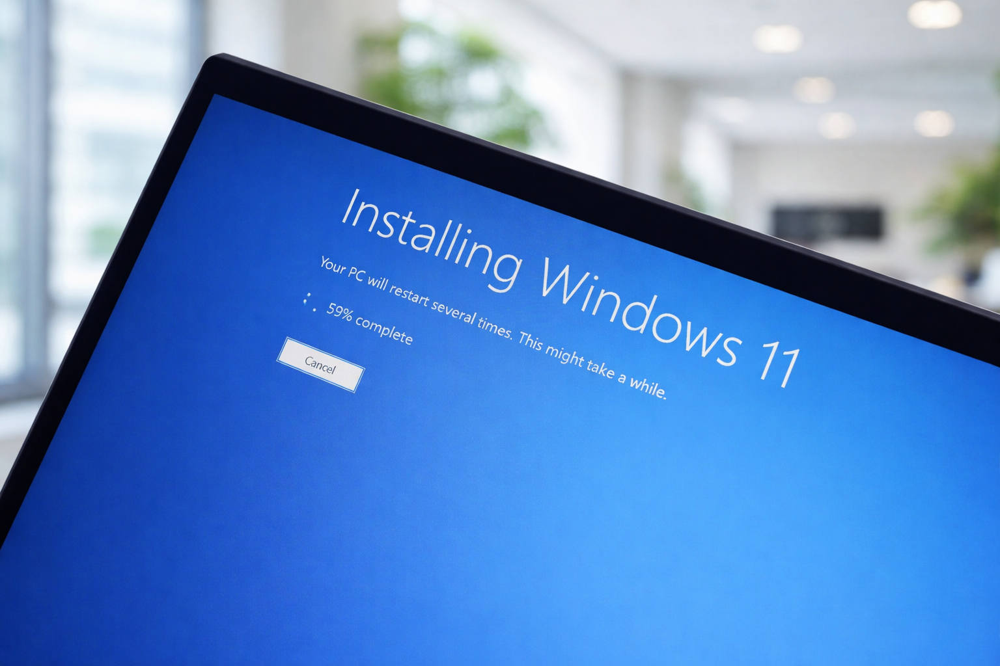

Sistema Operativo
¿Por qué reinstalar Windows puede salvar tu PC?
Con el tiempo, Windows acumula errores, archivos basura y problemas de registro. Una instalación limpia devuelve el rendimiento original del equipo, como si fuera nuevo. Recomendamos hacerlo cada 1 o 2 años o ante problemas graves.